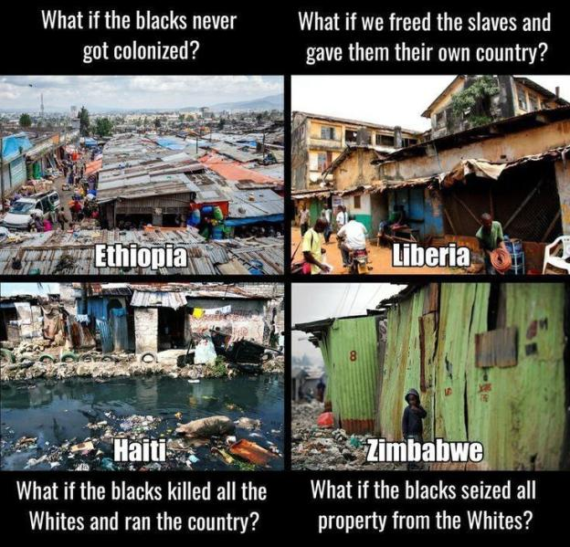

Thoughts On “Social Justice”
Table of Contents
Note: I might add more sections to this page in the future.
1. The Nature of Discrimination
1.1. The Right To Discriminate Is Fundamental To Life
Every single one of us has the right to discriminate, and we use it every day.
We discriminate when we decide who we are friends with and who we are not friends with. We discriminate when we decide which employer we work for. We discriminate when we buy this brand over that brand, and we discriminate when we choose which gym we go to, which bank we deposit our money in, who we have sex with, whether we worship God instead of Allah (or no God at all), etc.
Discrimination is not inherently bad, but of course some people abuse it. That’s “wrong” (subjectively speaking), but they still have that right, in much the same way we all have a right to say things which are clearly wrong (“2+2=5”) or abominable (e.g. pro-slavery, Communism, etc).
1.2. Valuing Diversity Implies Valuing Discrimination
Valuing diversity should imply valuing discrimination, otherwise what value is there to be gained from having diversity? If there is variation, but no selection, there will be no improvements in the ideas or output. Likewise, if there is no diversity, then there would be no value to discriminating. If there is no variation, then there is nothing to select from.
If the left-wing worldview is taken to its logical conclusion, it actually would lead to complete racial segregation. On the one hand, they don’t believe that there are any important differences between people of different races, but if that’s the case, then there can’t be any possible benefit to diversity because we’re all the same. And yet they celebrate diversity, even though they have no reason why it would make anybody’s life better.
At the same time, there are these supposed disadvantages that are created by being a minority, so the logical conclusion should be that the best thing to do would be to segregate people by race, so that they don’t face that disadvantage of being a minority.
If other cultures and peoples are so insightful, then why don’t the leftists live in those countries? The vast majority of them wouldn’t live anywhere else but the West, except maybe Japan and other Western-influenced countries.
Relevant Video: Don’t Be A Racist Jerk!!.
1.3. Lookism Will Probably Never Go Away
Lookism will probably be the last form of discrimination to ever be eliminated (if people are going to insist that we should eliminate all forms of irrational discrimination). Not even the most hard-core leftists who claim to be obsessed with eliminating all forms of discrimination have recognized Lookism as a prevalent form of discrimination that exists basically everywhere.
In some cases, heightism can be classified as a subtype of lookism. Heightism is another form of discrimination that leftists don’t address, even though addressing it logically ought to be part of their worldview.
2. The Origin Of The Need For Diversity Equal Representation
When leftists use the word “diversity”, sometimes what they’re really talking about is their desire for “equal representation” of population subgroups into positions of power and influence, which shall be the topic of this section. In my opinion, equal representation is one of the few practical cases where “diversity” makes any sense, provided that it’s practical, increases political stability, and it’s not reasonably unachievable due to genetic and biological differences.
The need for equal representation originates whenever there is a sizable portion of the population that is distinctly different from the rest of the population. In an ethnically homogenous country like Japan, Korea, Tunisia, etc, it wouldn’t make sense for the people in those countries to promote ethnic diversity in their leadership (government positions, corporation CEOs, representation in STEM, etc) because they are ethnically homogenous. An ethnically diverse government and corporate elite would not be representative of those countries.
Theoretically at some point, some differences in a country’s population could become so small that the differences would basically become a non-issue, from the collective perspective of the entire population. It probably depends on the context of the situation, but it could be as small as 95/5, 98/2, 99/1, perhaps even 999/1. Trans Rights Activists who are in favor of stating pronouns believe that a population split of less than 99/1 is still big enough to warrant mandating everyone to state their pronouns, but I disagree on this for practical reasons. In the most general form, this question could be rephrased as:
“How big would the ratio have to be to make it reasonable for the majority of the population to do X to accommodate the minority of the population? 999999/1? 9999/1? 999/1? 995/5?”
In a country that is not homogenous like India, the United States, Nigeria, DRC, etc, there are great efforts to promote equal representation in government, STEM jobs and research, the corporate world, etc, because the populations are diverse. Since the United States has had a sizable black population of about ~15% for over 200 years, black people in the United States felt excluded since the country still never had a black president until 2009, (and even then Barack Obama was/is technically half white). If black people have always made up an average of about ~13% of the population of the US for the ~220 years for which the US has existed with a president as the head of government (starting with the enforcement of the US Constitution in 1789) up to the start of Obama’s presidency in 2009, then 220 * 0.13 = 28.60 years for which it would be proportionately “fair” for the US to have a black president, if we are working under the thesis that the goal of “diversity” (equal representation) is to represent every faction of the population equally. Of course, while the historical reason why the United States never had a black president during the 19th and 20th centuries can be mainly attributed to the social and legal inequality of blacks in comparison to whites, the US is still very unlikely to have proportionally as many black presidents as there are black people in the national population for the 21st century and beyond since black people have less suitable genetics for Modernity.
As another example, religion is a very polarizing topic in Nigeria where the population is split in nearly equal halves between Christianity and Islam. If the government and/or president of Nigeria was constantly represented by only one religion but not the other, this would strongly disrupt the balance of power and national stability of the country. The Nigerian government must thus alternate between Christian-partisan and Islam-partisan leadership, lest the other side will feel excluded, perhaps even to the point where they will riot over it. Diversity in the two religions present in the country is thus very important, though this would not be a less pressing issue if the country was split 95/5, 90/10, or even 80/20 on religion.
Since every human society has two biological sexes, there will always be at least one way to divide every human society into at least two separate and nearly equally-sized portions. So even if a human society was ethnically homogenous, there could always persist a demand for the less represented sex to gain representation in a field of power and/or influence, provided that the society is reasonably egalitarian. As of 2023, the United States has never had a female president in the entirety of its 247 years of existence and 234 years for which it has had a president. Even then, it is difficult to imagine that the US will ever have enough female presidents leading over enough years to ever have a completely equal number of years over which it has had male presidents, especially since it simply isn’t biologically natural for women to be social leaders at the same rate as men are.
3. Reasons Why The Supposed Racial Oppression Of Minorities In The United States Is A Myth
- “Oppressed” racial minorities aren’t leaving the United States. If anything, they’re immigrating to the United States.
- Historically, Native Americans, Native Hawaiians, and others fought lots of wars with each other. So why was it any different from white Europeans arrived to the New World and did the same thing? Even if the Native Americans did somehow manage to build more powerful civilizations with more advanced technology, they still would’ve eventually died out as soon as they came in contact with Old World diseases.
- The best explanation for different crime rates between different races is that they’re caused by their different genetics, since that’s what the definition of a race is and also since this would be the conclusion of Occam’s Razor. The homicide rates of blacks and Hispanics in the United States match those of sub-Saharan Africa and Latin America respectively. It makes perfect sense that races whose populations have been historically and predominantly limited by tribal warfare (e.g. sub-Saharan Africans and Native Americans) evolved to be more violent and have naturally higher crime rates than racial populations that were primarily limited by diseases and famines instead (e.g. Europeans and East Asians).
- Ghettos are largely caused by genetics: It’s Probably Mostly Genetic.
- The Asian minority in the US used to be very oppressed, but now it’s among the most success and well-off for its size. If Asians can rise from the bottom to the top, this is evidence that nothing was really preventing other minorities from doing the same, besides genetic tendencies and variations of course.
- The average black or Hispanic person in the US is lives a far better life than someone of the same ethnic group but lives in a different country.
- Even after 50+ years of time to recover socially and economically, plus a variety of affirmative action policies / propaganda, blacks still don’t have the same prosperity as whites. At some point, a rational-minded person will have to ask: Is this really an issue that can be fixed by “improving” the environmental circumstances? Or is it the case that blacks will never achieve the same prosperity as whites without intervention since race realism is a thing?
- ~67% of blacks in the US are raised by single parents. Obviously, this has a huge impact on how most of the blacks would develop later on in life. But how could racism be feasibly attributed to causing most blacks to be raised by single parents, and thus experiencing poorer life outcomes as a result of that?
- The population of Africa skyrocketed after the Europeans colonized the continent, which implies that European colonization was largely a good thing since it largely ended war, disease, and famine in Africa for the time being.
- Racial disparities in wealth, academic achievement, educational attainment, crime rates, etc are better explained by Race Realism.
4. Good Memes and Graphs Relating To “Social Justice”


Black History: Africa Largely Benefitted From European Colonization More Than It Suffered.


The borders of Africa are blamed for separating so many ethnicities, religions, languages, etc across Africa by country borders. But at the same time, the leftist humanists are strongly in favor of some sort of diverse, multi-ethnic utopia where all people of all races live in harmony and prosperity with each other. If they believe that that would be both possible and favorable, then why do they still blame the way the borders of Africa were drawn for separating various demographics of people between state lines?

There are some things to nitpick about this image, but it’s still a good meme:
- Ethiopia did get invaded and arguably colonized by Fascist Italy during WWII, although it probably wasn’t long or brutal enough to significantly affect the country’s development. Ethiopia did avoid colonization during the Age of Colonization.
- The photos in the meme are obviously cherry-picked, but they are still presumably from the titled countries nonetheless.
- The people running the Haitian government are mulattoes, not completely black. The Haitian Revolution was the most successful slave uprising in history though.
- Haiti is vulnerable to earthquakes and hurricanes, so the state of the country is partially attributed to environmental factors. However:
- Taiwan deals with typhoons and earthquakes constantly and its completely fine.
- Sri Lanka deals with droughts, cyclones, landslides, earthquakes, etc and its completely fine.
- Parts of the United States which face a lot more much stronger natural disasters, stay (almost) completely unharmed when they happen, in large part because the country has better infrastructure.
- Hawaii deals with many more earthquakes and hurricanes than Haiti plus having many active volcanoes, is almost the exact same size as Haiti, has 10 times less people than Haiti, and is around 4 times farther away from America than Haiti is (America is the closest significant landmass with people on it to Hawaii while Haiti literally shares a landmass with the Dominican Republic).
5. Thoughts On Transgender People
5.1. Important Distinctions To Make Regarding Transgender People
- Trans women are not women, and trans men are not men. This fact is true and will always no matter how many surgeries, hormones, or therapy a person receives.
- The best and most non-controversial way to define “woman” is via genetics. In mammals, the Y chromosome contains the gene SRY, which triggers male development.
- A woman is an adult human female, who does not have a Y chromosome that contains the gene SRY. It’s that simple.
- Gender dysphoria is maladaptive, and it is classified as a mental disorder according to the DSM-5. Its occurrence in the modern era is likely yet another negative consequence of modern civilization, technology, and evolutionary mismatch.
- Early-onset gender dysphoria should be distinguished from late-onset gender dysphoria.
- There are two groups that we need to separate, body dysmorphia vs gender dysmorphia. Neither side cares to do this for political reasons.
- Conservatives want to equate the increased number of kids that only want to change how they outwardly identify (gender dysmorphia) with the still tiny number who want medical treatment (body dysmorphia).
- Progressives are scared to differentiate the two because they might get canceled etc for trying to divide the movement etc.
- LGB (drop the T) should be popularized as an acronym, because being gay or bisexual is not the same as being transgender.
- Intersex people are to transgender people as albino people are to white people. They are completely different things. Bringing up intersex people as an excuse for multiple sexes existing is just a Red Herring Fallacy.
5.2. Regarding The Medical Treatment Of Gender Dysphoria, Identity, And Transgender People
- The medical field should be focusing on how to treat gender dysphoria (i.e. to cure it; to make it go away), not focus on affirming the illness.
- Trans people may feel that gender reassignment surgeries, hormonal therapies, etc may help them feel better, but I would like to see some more long-term studies on this. There aren’t many out there since trans-people are a recent phenomenon with not a lot of people to study.
- The long-term effects of puberty-blockers, hormonal therapies, sex reassignment surgeries, etc are still very unknown and dangerous (especially for children), and yet they’re becoming more common anyway due to leftist ideology and big pharma.
- It could be that some transgender people choose to transition because they want attention and/or because they’re bored because they’re not able to go through the power process in today’s world.
- Some people who transition due to late-onset gender dysphoria are motivated to transition in part because it’s a fetish for them.
5.3. Preferred Pronouns Are Absurd
- Pronouns are supposed to make speaking more convenient. Forcing people to remember everybody’s pronouns makes them inconvenient, which defeats the purpose of using pronouns.
- The only reason all this pronoun nonsense has any traction is because it’s imposed from the top down. TRAs may argue that language changes and evolves, and so adding made-up pronouns shouldn’t be an issue, but the problem with this argument is that the language change is not organic or natural in this case, hence why it is an issue. It’s being forced on people against their common sense (and self-preservation), and people face consequences if they fail to submit to their rules.
- Even if we do use someone’s preferred pronouns, they might still get upset anyway.
- If you have 30 people in a room and only one or two (or zero) have ’preferred pronouns,’ making it mandatory for everyone to announce their pronouns during group introductions is both tokenistic and a huge time-waster.
- Even among strangers, group introductions are annoying and unproductive as hell, no one remembers anything and most people aren’t even trying to pay attention.
- How often do people hear their own pronouns anyway? If you’re in the room to hear them, it’s usually just “you”. Requiring people to use preferred pronouns requires third parties to police what people say on the trans-person’s behalf. Why should people care how others describe them when they aren’t there?
- If an employer is hiring people and they see a list of pronouns on an applicant’s resume, they are wise to toss the resume and moving on. It’s a red flag that such people can and will play the identity card at the slightest inconvenience, and that their company is guaranteed to lose when the lawsuit comes, even if no laws were broken and no harm was caused.
- The ’inclusive’ language were females are called ’people who menstruate, ’menstruators’, ’people with vulvas’, etc is arguably dehumanizing and demeaning, although I guess there are some arguably good reasons for using this language.